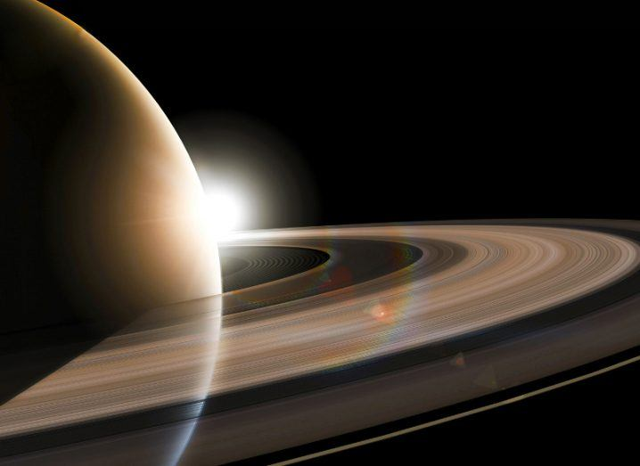

Facts About Saturn
Overview
- Saturn is the sixth planet from the Sun
- It is made quite distinct by its many beautiful rings that orbit the planet
- A Saturn Day is about 10.7 hours long
- Saturn has confirmed 53 moons so far - The biggest being Titan
Size and Distances
- Saturn is a Gas Giant and the second largest in the Solar System
- It has a 72368 miles or 116464 kilometres and is 764 times the size of Earth
- Saturn is 886 million miles or 1.4 billion kilometres from the Sun
- To Earth it would be a journey of roughly 746 miles or 1.2 billion miles for Saturn



Composition
- Being a Gas Giant means that there is no Earth like surface
- The diameter of the rings are 3 times that of Earths and made up of Ice, Rock and Dust
- Saturn might have a solid core although it has not been proven yet
- Similar to Jupiter, Saturn is composed of large layers of Gas Clouds
Temperature and Atmosphere
- The average temperature of Saturn is -113 degrees celsius
- It is roughly 75% Hydrogen and 25% Helium and other trace substances like methane and water ice
- The atmosphere is similar to Jupiter overall in that its core is surrounded by liquid and very thick
- Saturn's winds are quite extreme but not as powerful as Jupiter's or Neptunes's